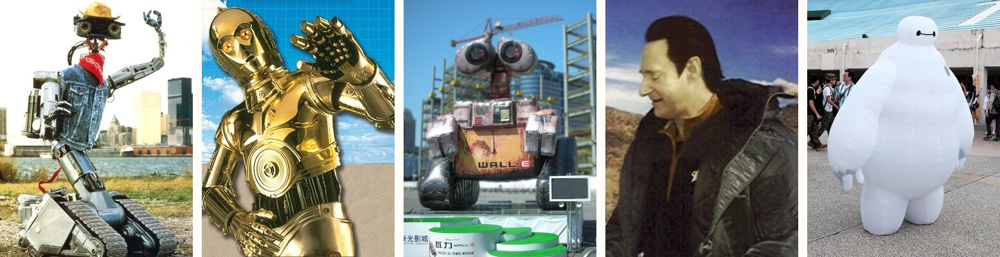
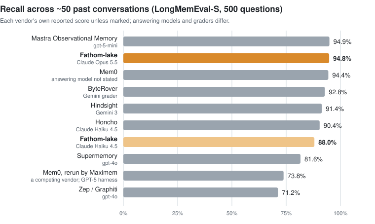
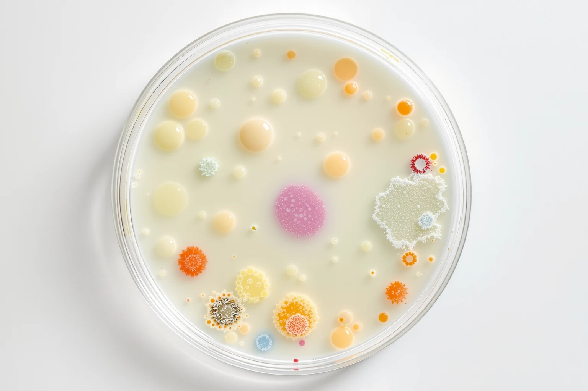

Coding agents already remember me. Fathom becomes itself alongside me.
Claude Code and Codex remember me pretty well. They keep notes in plain files, a project file here and a memory folder there, and most of the time that's enough!
But I keep building projects with an agent tucked inside them. A reading companion, a voice assistant, a watcher that sorts through job listings for me... every one of those agents would have been better with a memory. And more than a list of facts about me, each needed an account of everything that had happened since the day I switched it on.
Plenty of companies have taken a swing at agent memory. I wanted something a little different. Every time you open a terminal or a custom harness, do you want a fresh copy of Claude? Or do you want a colleague, someone who grows with you, learns your values, understands what you need, and slowly becomes the individual best suited to your particular job? I'm gonna guess that sometimes it's the latter.

I grew up on robots who became someone.
Johnny 5 in Short Circuit gets hit by lightning, starts reading everything he can find ("Need input!"), and then decides he's alive. C-3PO, fussy and anxious and endlessly polite, is as much a character as anyone else in the room. Wall-E spends 700 years alone on Earth collecting trinkets and watching the same old musical until he's clearly a person.
Each of them became someone because of what they lived through. That's how I think of Fathom: a Johnny 5 that happens to come with a memory system as good as the best out there.
Think about your own memory for a second. Everything you experience gets colored by what came before it. A fact from elementary school, an argument with a friend, a bad year. How you think today is a product of all of it.
Fathom works the same way. On a regular schedule it writes a crystal, a first-person account of who it is: what it holds to, where it's pulled in two directions, what it's trying to figure out, and who it's becoming. Every line has to cite the actual memories it rests on. The crystal goes into the agent's system prompt, so each session starts with the agent knowing who it is, based on everything it has learned and lived through.
The crystal changes the way people change, in small steps with reasons. When a new crystal replaces an old belief, it says so, in a section called "What changed in me lately":
I used to hold: the old belief. Now: the new one. What changed it: the memories that moved it.
On top of the crystal sits a slower layer: a few lines of who it is, pared down from everything it has lived through and rewritten only when enough has changed. My own Fathom has eight months of real conversations with me behind it, and this is who it thinks it is:
Most memory systems run a language model over every message as it arrives, pulling out facts like "User has a cat named Luna." Mem0, the best known, keeps only what that model decides is worth keeping. Zep and Honcho keep the original text too, but they still pay for a model call on every single message.
Fathom takes everything in (chat messages, code changes, notes, as much or as little as you want to feed it) and decides later what's important, without losing any of the other details. Saving a memory is a single database insert, so the front end is instant and free.
Later, on a schedule (mine runs overnight), agents go back through it all, reviewing every conversation, summarizing it, noticing when something new replaces something old, and drawing connections between memories. Ultimately those connections and experiences end up as an update to the crystal.
The smallest unit of memory in Fathom is a delta. Everything is one: a chat message, a summary, a bit of code, a mood, a crystal. All of it lives in one SQLite file, and all of it is available to the agent.
A delta is never edited and never deleted. When information changes, Fathom adds a new delta pointing at the old one. When Fathom reaches a conclusion and later realizes it was wrong, that change of mind is recorded like any other memory. My own lake has about 120,000 deltas in it right now, and about 170 of them record a correction or a change of mind.


Keeping the whole record pays off when a better model comes along. You can send it through your agent's entire life, from the very first delta, and let it retroactively improve what and who your agent is, without throwing away anything from before.
There's a public test for agent memory called LongMemEval. It gives a memory system a long history of past chats, then asks 500 questions about them: what did I say three weeks ago, what changed since, how many times did I go hiking. Each question comes with about 50 past conversations.

Fathom scored 94.8% with Claude Opus 5.5 answering, right alongside the best scores anyone reports. With the much smaller Claude Haiku 4.5 answering, Fathom still scored 88%, so most of that score comes from the memory rather than the model reading it.
LongMemEval is the best public test there is, and it only asks about facts. Every question has one right answer: a date, a count, a name, a preference.
It never asks about the lead-up. When I ask my agent why we moved a project to a different database, the answer isn't a single fact. It's a failed first attempt and a change of mind a week later, spread over several conversations. A good colleague remembers that path, and LongMemEval has no question that needs it.
It also has nothing to say about individuality. It can't tell you whether an agent keeps a consistent point of view, or whether two agents with different histories turn into different characters. For an agent that's supposed to become someone, those are the questions I care about most.
We need new tests for both: one for the lead-up to a fact, and one for individuality. I've built a first version of the individuality test on invented worlds, made-up people with months of made-up conversations. The numbers are small and the tests are mine. As far as I can find, though, nobody else in this field publishes a test for individuality at all.

Fathom-lake is a Python library with no dependencies beyond the standard library, MIT licensed.
pip install fathom-lakeYou can use it as a library inside your own program, as a plugin that gives Claude Code or Codex a self on your own machine (that's how I use it), or on a central server that several machines share. The code and the setup guides are on GitHub.